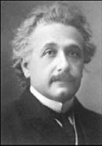
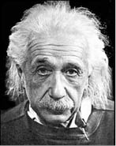
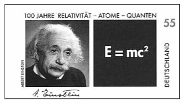
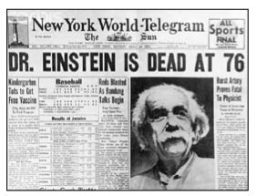

Albert Einstein, Nobel Fizik Ödülü sonrası, 1921
Albert Einstein (1879-1955)
“insan aklın sınırlarını zorlamadıkça hiçbir şeye ulaşamaz.”
Ünlü fizikçi Albert Einstein 14 Mart 1879’da Almanya’nın Ulm kentinde doğdu. Zürich Politek-nik Enstitüsü’nün ardından 1909 yılında profesör olan Einstein, yaşamı boyunca bilim alanında önemli gelişmelere imza attı. Mekanik fizikten, Kuantum fiziğine geçişin öncüsü olmasının yanı sıra, Kütle-Enerji Eşitliği (E=mc2) başta olmak üzere fiziğin farklı kapılarını aralayacak önemli teoriler sundu bilim dünyasına. 1955’te ABD’de ölümüne dek çalışmaya ve bu alanda konferanslar vermeye devam etti. İnsancıl kişiliğinin yanı sıra dağınık saçlı görüntüsü ve konferanslarına terlikle katılma sadeliği ile gittiği yerlerde herkesin sevgisini kazanırdı.
Yine bu konferanslarından birine katılmak için yola çıktığında şoförü:
“Efendim sizinle çok konferansa gittik ve ben tüm bunları arka sıralardan dinledim, bu yüzden sizin şimdiki konferansta neler anlatacağınızı âdeta ezberledim diyebilirim” der.

Bunun üzerine Einstein gülümseyerek muzip teklifini yapar:
“Öyleyse bu gideceğimiz yerde konuşmayı sen yap. İlk defa gittiğimizden beni tanıyan çıkmayacaktır. Bu kez ben senin konuşmanı arka sıralardan dinleyeyim, bakalım söylediklerin doğru mu?”
Einstein şoförüyle birlikte planını uygulamaya koyar. Şoför gerçekten de başarılı bir konuşma yapar. Konferansın sonunda sorular sorulur ve şoför hepsini doğru şekilde yanıtlar. Tam yerine oturacağı esnada son soru gelir. Bugüne dek konferanslarda sorulmayan bir sorudur bu. Ancak şoför kıvrak zekâsını kullanarak “Bu konferansın ardından bu derece basit bir soru sormanızı yadırgadım” der, “Ancak her sorunun yine de cevaplanması gerekir”. Bu sözlerin sonrasında arka sırada bulunan Einstein’ı işaret ederek “Şimdi size sorunun basitliğini de ispatlayacağım, soru o kadar basit ki buna şoförüm bile yanıt verebilir” der.

20. yüzyılın en büyük fizikçisi olarak nitelendirilen Albert Einstein, Almanya, Fransa, Belçika, İngiltere ve ABD’de yaşadı. Buralarda onuruna pek çok yemek verildi. Bu yemeklerin birinde sohbet esnasında ev sahibesi, ünlü biliminsanına “izafiyet teorisi”ni sorar.
Albert Einstein’ın 1918 yılında öne sürdüğü izafiyet teorisi; zamanın göreceli bir kavram olduğu, uzay ve zamanın bir algıdan ibaret olduğu, uzay ve zamanı algılama biçimimizin, nerede bulunduğumuza ve nasıl hareket ettiğimize bağlı bulunduğu gibi açıklanması öyle ayaküstü bir konuşmayla olmayacak, belli bir fizik bilgisi dahilinde, ancak bugün daha net anlaşılabilen teorilerden oluşuyordu.
Ünlü fizikçi teoriyi açıklamanın faydasız olacağını anlatmak için şu örneğe başvurdu:
“Hanımefendi, sıcak bir günde görme engelli bir dostumla bahçede gezerken bir ara ona ‘Canım bir bardak soğuk süt çekti’ diyeceğim tuttu.
Dostum bana ‘Sütün ne olduğunu bilmiyorum’ deyince, ben de ‘Beyaz bir sıvıdır’ açıklamasını yaptım.
Dostum bu kez ‘Sıvının ne olduğunu biliyorum ama beyaz nedir anlayamadım’ dedi. ‘Kuğu kuşunun tüylerinin rengi beyazdır’ dedim ben de.
Bunun üzerine dostum tüyün ne olduğunu bildiğini fakat kuğuyu çıkaramadığını söyledi.
Ben de ona kuğunun en önemli özelliğini söyleyerek anlattım: ‘Kuğu eğri boyunlu bir kuştur’.
Dostum boynun ne olduğunu biliyordu, ancak bu kez de eğriyi anlamamıştı. Artık daha fazla sabredemedim ve adamın kolunu tutup dümdüz uzattım. ‘İşte bu düzdür’ dedim. Ardından kolunu dirsekten bükerek ‘Bu da eğridir’ diye açıkladım.
Bunun üzerine görme engelli dostum heyecanlanarak şöyle dedi:
‘Evet şimdi anladım sütün ne olduğunu!’ “

Ölüm haberini manşetine taşıyan
New York World-Telegram gazetesi, 18 Nisan 1955
Albert Einstein’dan...
“Önyargıları yok etmek, atom çekirdeğini parçalamaktan daha zordur.”
“Görelilik kuramım başarıyla kanıtlanırsa Almanya benim bir Alman olduğumu iddia edecek, Fransa ise dünya vatandaşı olduğumu açıklayacaktır. Kuramım gerçek dışı çıktığında ise, Fransa bir Alman olduğumu söyleyecek, Almanya ise bir Yahudi olduğumu açıklayacaktır.”
“Ben gelecek için hiçbir endişe duymadım. O yeterince hızlı geliyor.”
“3. Dünya Savaşı’nın nasıl olacağını bilmiyorum ama 4. Dünya Savaşı’nın taş ve sopalarla olacağını biliyorum.”
“Delilik, aynı şeyi tekrar tekrar yapıp farklı sonuçlar beklemektir.”
“Aptalların tatili tembelliktir, bitmez.”
“Hayatı yaşamanın iki yolu var: Biri hiçbir şeyin mucize olmadığını, diğeri her şeyin bir mucize olduğunu düşünmek...”